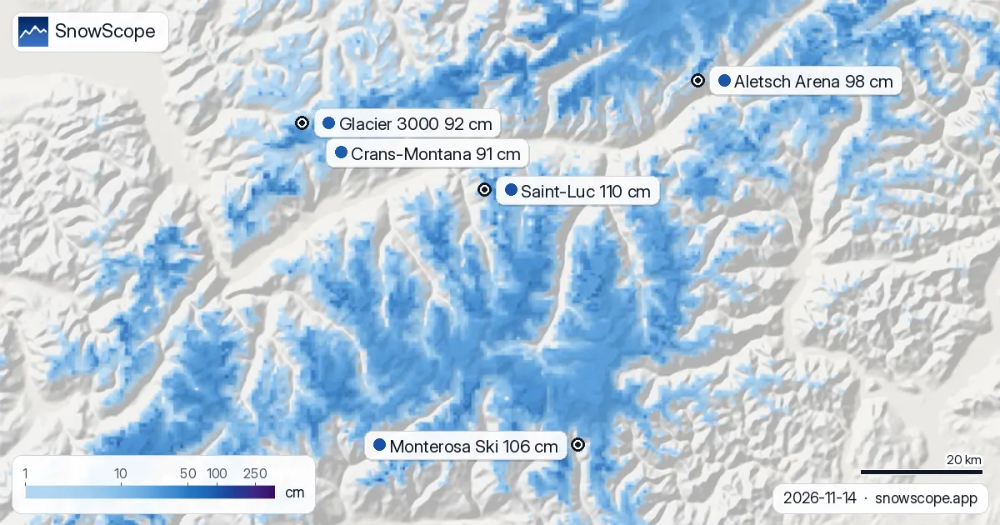
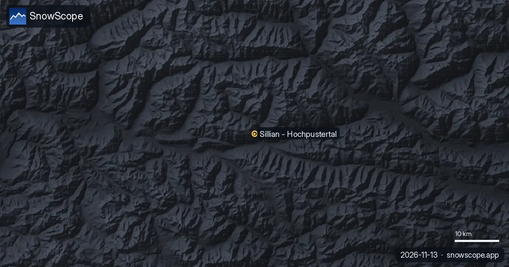

Alps snow report: Saint-Luc tops the list at 110 cm (14 November)
Alps snow report, 14 November. If you want the most snow in the Alps today, look at Saint-Luc (Switzerland): about 110 cm up high. After it come Monterosa Ski (106 cm) and Aletsch Arena (98 cm). Today 791 of the 1,179 resorts in the Alps have snow on their upper slopes; in all, our model counts 68,650 km² under snow. Deep snow on a north face and bare ground on the south side of the same ridge is normal in dry mountains.
See the live snow forecast for Saint-Luc in the SnowScope appSnow depth, powder alerts and the 3D map, free.
Snow on the slopes today
More ground is white now: 35,250 km² on 12 November, 68,650 km² today, and 56,290 km² expected on 17 November.
| Resort | Snow depth | New snow, 72 h | Coming, next days | Top |
|---|---|---|---|---|
| Saint-Luc | 110 cm | 19 cm | 24 cm | 2,973 m |
| Monterosa Ski | 106 cm | 28 cm | 18 cm | 3,030 m |
| Aletsch Arena | 98 cm | 18 cm | 17 cm | 2,869 m |
| Glacier 3000 | 92 cm | 26 cm | 38 cm | 2,931 m |
| Crans-Montana | 91 cm | 18 cm | 29 cm | 2,872 m |
What to expect next
Between now and 17 November we expect 38 cm at Glacier 3000, 29 cm at Crans-Montana and 24 cm at Saint-Luc.
On 17 November the freezing level at Saint-Luc climbs to 2,450 m to 3,160 m, higher than the top of the lifts (2,973 m): expect rain or wet snow on every slope.
Forecasts a few days ahead can change: look at the map again the day before you travel.
What the stations saw
On 14 November, the Weißseespitze station (3,499 m) measured 259 cm on the ground. At the Sonnblick station (3,109 m), the gauge showed 60 cm of snow on the ground on 14 November, 5 cm of it new in 24 hours. On 14 November, the Schnals Teufelsegg station (3,035 m) measured 47 cm on the ground, including 7 cm of new snow in 24 hours.
Our resort numbers are estimates for the upper slopes. The station numbers are real measurements, but only at one point and on the date shown.
How this start compares
Saint-Luc is behind at 2,327 m: only 7 cm today, under the usual 22 cm. Only 8 of the past 46 winters had less there on 14 November.
At Monterosa Ski, the ground at 2,118 m is still bare today, while 13 cm is usual for the date. Only 2 of the past 46 winters had as little.
Tips for skiers
- Snow on the map does not mean a resort is open: check lifts and opening dates on the resort's website.
- Early-season snow is thin. Stay on open, groomed pistes: rocks and grass can hide just under the surface.
- In dry mountains like the Atlas, snow lasts on high, north-facing slopes and melts first on the sunny side. Follow the shade.
- Before you ski off-piste or go touring, read the official avalanche bulletin (links below).
- Get a powder alert in the SnowScope app to know when Saint-Luc gets fresh snow.
About these numbers
Resort snow depths are the deepest snow on the resort's upper slopes from the SnowScope snow model (about 1 km, run of 14 November); they are estimates for an area, not a measurement at one point. Station values are measurements on the date shown. Forecasts can change. Always read the official avalanche bulletin before going off-piste.
Official avalanche bulletins: EAWS (Alps)
Cite this report
For research, teaching or the press: the numbers and charts are free to reuse under CC BY 4.0 with this citation.
SnowScope (2026), Alps snow report: Saint-Luc tops the list at 110 cm (14 November), https://snowscope.app/blog/en/2026/11/alps-saint-luc-snow-depth-today-14-november-2026.html, accessed 2026-11-14
SnowScope (Atlas Labs). (2026, November 14). Alps snow report: Saint-Luc tops the list at 110 cm (14 November). SnowScope snow reports. https://snowscope.app/blog/en/2026/11/alps-saint-luc-snow-depth-today-14-november-2026.html
BibTeX
@misc{snowscope2026alpssaintlucsnowdepthtod,
author = {{SnowScope (Atlas Labs)}},
title = {Alps snow report: Saint-Luc tops the list at 110 cm (14 November)},
year = {2026},
month = nov,
howpublished = {\url{https://snowscope.app/blog/en/2026/11/alps-saint-luc-snow-depth-today-14-november-2026.html}},
note = {Published 2026-11-14 12:48 UTC; accessed 2026-11-14}
}· CC BY 4.0 · Methods, data and tools →
Saint-Luc: snow and temperature by height, this winter vs last (tools) →
Follow Saint-Luc
Free: a message when fresh snow is coming, and the forecast every morning.
More snow reports

Tignes snow conditions on 13 November 2026: 42 cm at the top (3447 m), 12 cm at 2503 m, a bare valley at 1559 m, and 99 cm forecast at the top over seven days, with rain below about 1700 m. How it compares with 46 past winters.

Snow depth in St Anton am Arlberg on 13 November 2026: about 1 cm at the top (2642 m), 5 cm at mid-mountain, bare in the village. This week 42 cm at the top and 33 cm mid-mountain, rain below about 1480 m. How deep is deep enough for the steep runs.

The Sillian (Hochpustertal) ski map with our snow layer on 13 November 2026: 8.6 cm on the top at 2399 m, bare lower slopes, and a week of mixed rain and snow with the snow line near 1,800 to 2,000 m.